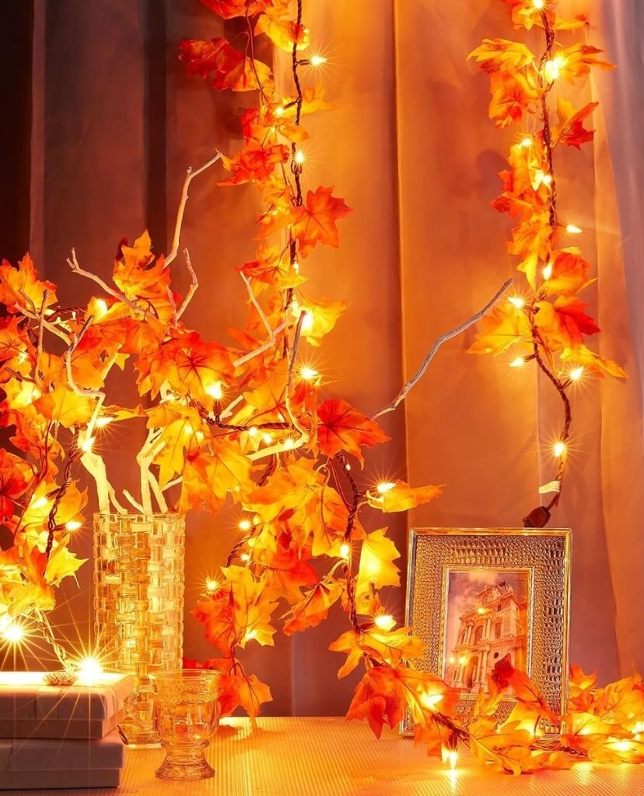

Hot Girl Herfst || Warmte in huis
Een echte Hot Girl Herfst draait niet alleen om wat je buiten doet, maar ook om de warme en knusse sfeer die je in huis kunt creëren. Ontdek onze beste tips en tricks om jouw huis om te toveren tot een gezellig toevluchtsoord tijdens de koudere dagen.
5 tips voor een herfstige sfeer in huis
- (Geur)kaarsen. Plaats geurige herfstkaarsen in je huis met warme, kruidige aroma's zoals kaneel, vanille of appel. Dit zorgt niet alleen voor een gezellige sfeer, maar geeft ook een heerlijke herfstgeur.
- Sfeervolle verlichting. Verspreid sfeervolle verlichting met behulp van fairy lights of herfstige lichtslingers. Zorg voor warm en gedempt licht om een knusse atmosfeer te creëren. 
- Comfortabele dekens en kussens. Leg zachte dekens en comfortabele kussens op banken en stoelen. Kies voor warme, herfstkleuren en texturen zoals fleece of gebreid materiaal om een uitnodigende en knusse uitstraling te bereiken.
- Herfstige decoraties. Versier je huis met herfstdecoraties zoals pompoenen, dennenappels, en herfstbladeren. Plaats deze items subtiel door het hele huis voor een natuurlijke en seizoensgebonden touch.
- Bakken van herfstlekkernijen. Vul je huis met heerlijke geuren door herfstlekkernijen te bakken, zoals cinnamon rolls, pompoenbrood of appeltaart. Niet alleen wordt het huis gevuld met een verleidelijke geur, maar je hebt ook wat lekkers om van te genieten tijdens gezellige momenten.